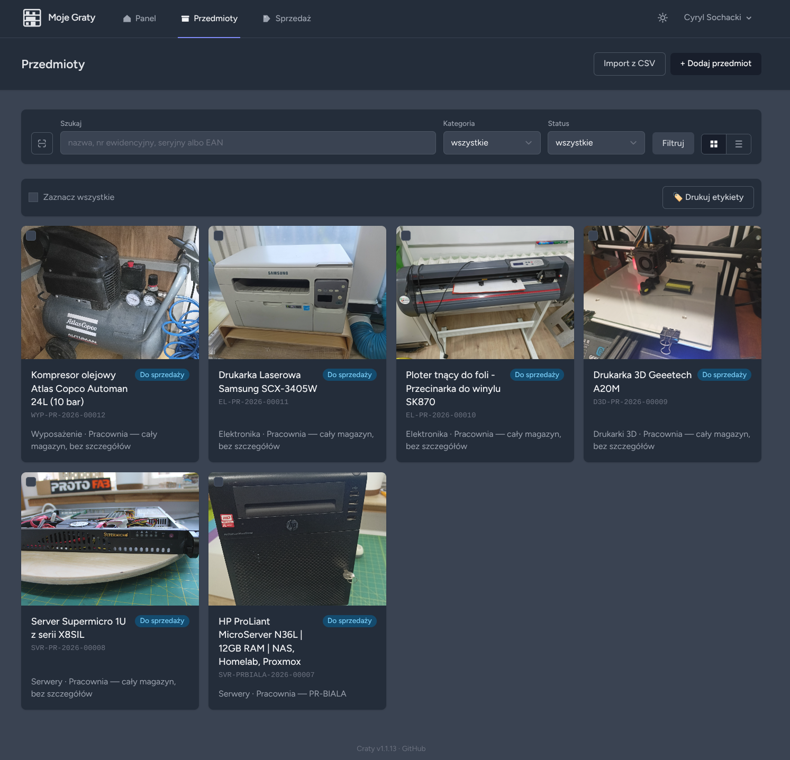

Warsztat i pracownia
Elektronarzędzia, osprzęt, materiały i drobnica w pojemnikach. Wiesz, co jest na stanie, co jest w naprawie i co komu wydałeś.
Craty to prosty program, który robi porządek w gratach. Każda rzecz dostaje swoje miejsce, numer i naklejkę z kodem QR, więc zamiast przekopywać trzy kartony, sprawdzasz w telefonie i wiesz. W warsztacie, w małym magazynie i w domu.
Open source (MIT) · działa na zwykłym hostingu z PHP · polski i angielski

Elektronarzędzia, osprzęt, materiały i drobnica w pojemnikach. Wiesz, co jest na stanie, co jest w naprawie i co komu wydałeś.
Narzędzia, sprzęt sportowy, dekoracje świąteczne, kable „na wszelki wypadek”. Zrób zdjęcie, wskaż półkę i przestań szukać po omacku.
Hackerspace, stowarzyszenie, klub, firma, w której sprzętem dzieli się kilka osób. Konta dla zespołu i jasna historia, kto co zmienił.
Magazyn, pomieszczenie, regał, półka, pojemnik. Całość w jednym czytelnym drzewie, a po najechaniu na półkę widzisz, co na niej leży.
Każda rzecz dostaje numer i kod QR. Drukujesz naklejkę na zwykłej drukarce etykiet, w kilku rozmiarach do wyboru.
Craty instaluje się na telefonie jak aplikacja. Skanujesz naklejkę albo kod kreskowy z opakowania i od razu widzisz kartę rzeczy.
Komu, kiedy i do kiedy. Przeterminowane widać na pulpicie, a jeśli chcesz, Craty codziennie przypomni o nich e-mailem.
Zdjęcia, faktury, instrukcje i gwarancje przy każdej rzeczy. Numer seryjny i wartość też, w razie kradzieży czy szkody.
Kto, kiedy i co zmienił: przeniesienia, statusy, wypożyczenia. Bez zgadywania, gdzie coś „wywędrowało”.
Masz coś niepotrzebnego? Wystaw to na publicznej stronie z opisem, zdjęciami i kontaktem do Ciebie, z linkiem do ogłoszenia na OLX, Allegro albo Vinted.
Polski i angielski, jasny i ciemny motyw, import z arkusza CSV, kilka kont z różnymi uprawnieniami.
Nowa wersja to paczka wgrywana z panelu. Bez SSH, bez terminala, bez dzwonienia do informatyka.
Kod QR na naklejce prowadzi prosto do karty rzeczy: zdjęcia, gdzie leży, czy ktoś ją pożyczył i ile jest warta. Działa z każdym telefonem z aparatem, bez instalowania dodatkowych aplikacji.
ELN-M1-2026-00042
Craty jest i zostanie prostym programem magazynowym. Nigdy nie urośnie w sklep z koszykiem i płatnościami, i dobrze, bo nie po to powstał.
Najnowsza wersja czeka w zakładce Releases na GitHubie, jako jeden plik .zip ze wszystkim w środku.
Rozpakuj ją na zwykłym hostingu z PHP i bazą MySQL albo MariaDB. Nie potrzebujesz SSH, Composera ani terminala.
Otwórz adres strony w przeglądarce. Kreator sprawdzi serwer, połączy bazę, założy konto administratora i opcjonalnie wgra dane przykładowe.
Wymagania: PHP 8.3+ MySQL 8+ / MariaDB 10.3+ Apache z mod_rewrite HTTPS (do skanowania aparatem). Szczegóły i wersja z Dockerem dla programistów: README na GitHubie.
Craty jest darmowe i otwarte. Pobierz, zainstaluj, przyklej pierwszą naklejkę.